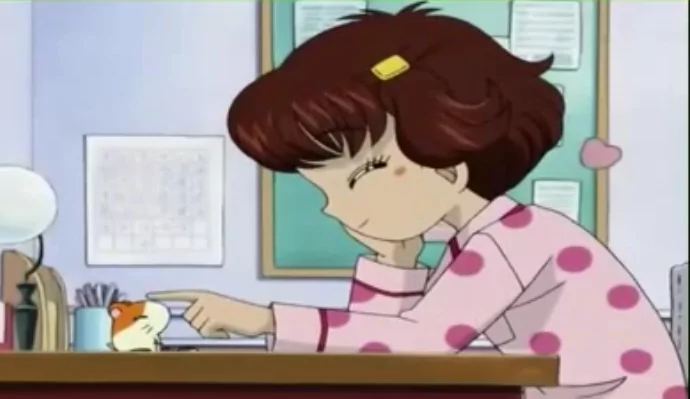
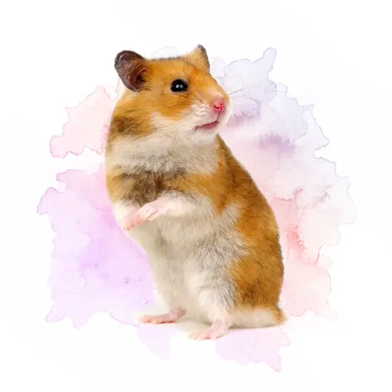
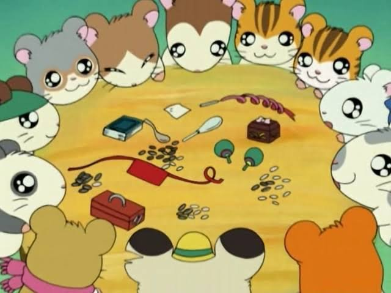

• A dona de Hamtaro (Laura) sempre escreveua no final de seu diário particular: "Hoje o dia foi bom, mas amanhã vai ser melhor ainda".
• A venda de hamsters no Japão foi aplicada por causa deste anime.
• Quando estão em perigo eles costumam usar o "poder Ham Ham", que na verdade é apenas uma iniciativa, dada por um hamster, a todos os outros para fazer a mesma coisa.
